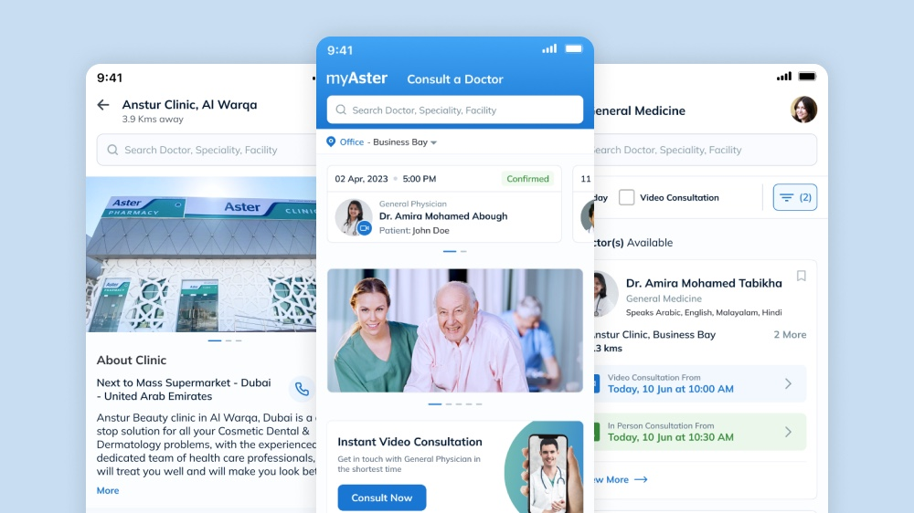
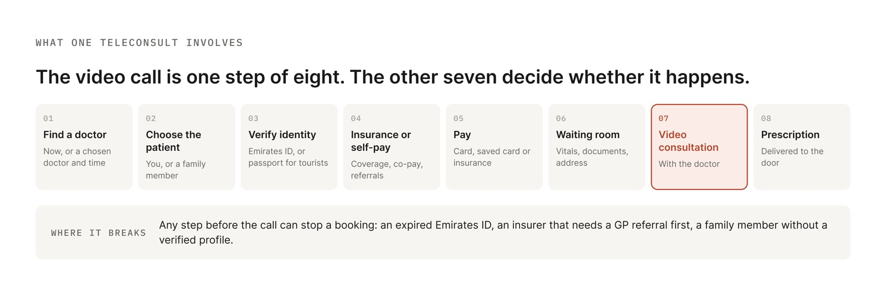
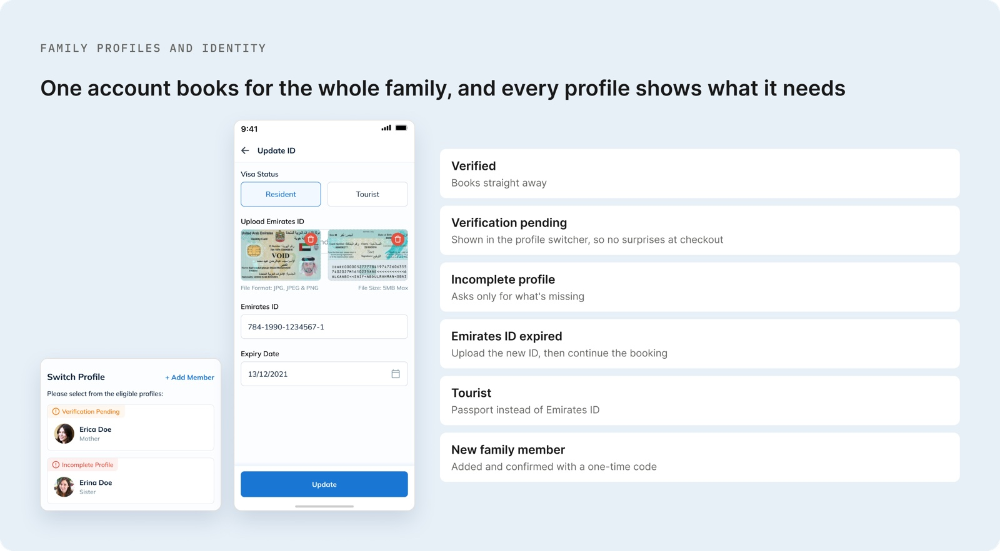
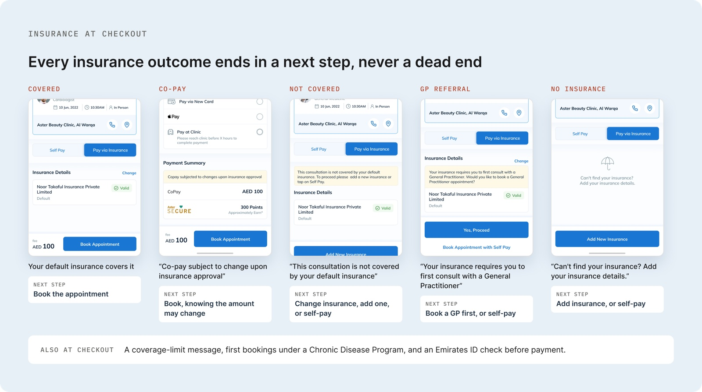
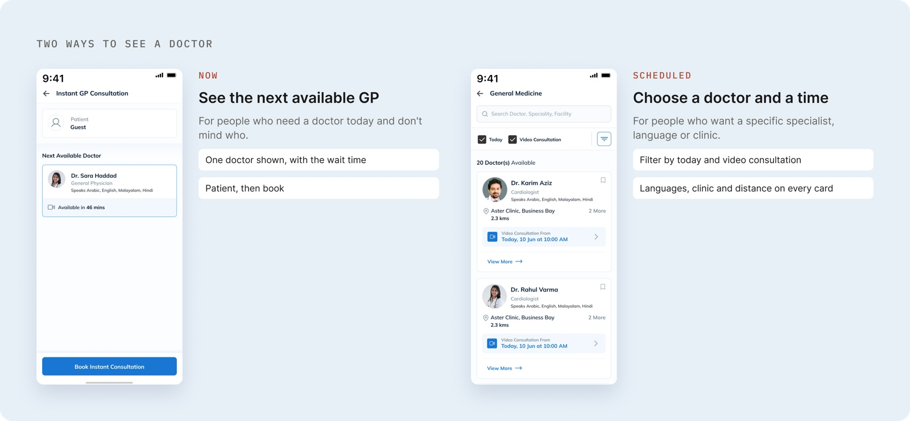
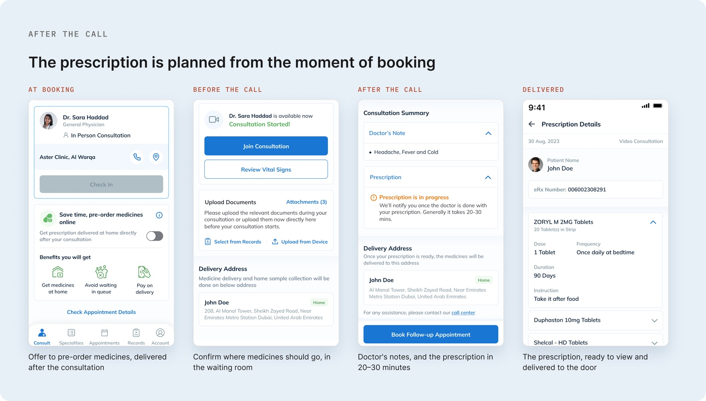
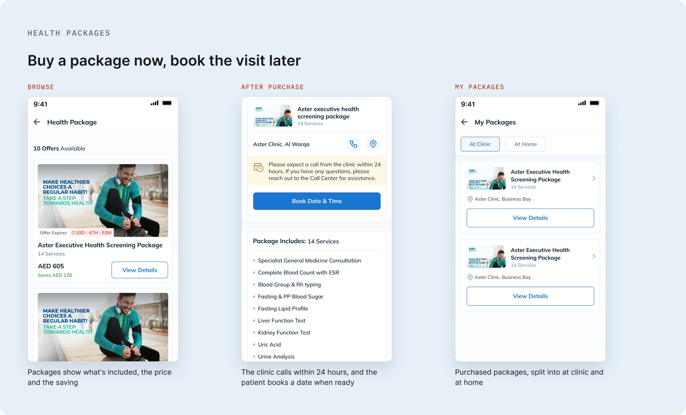
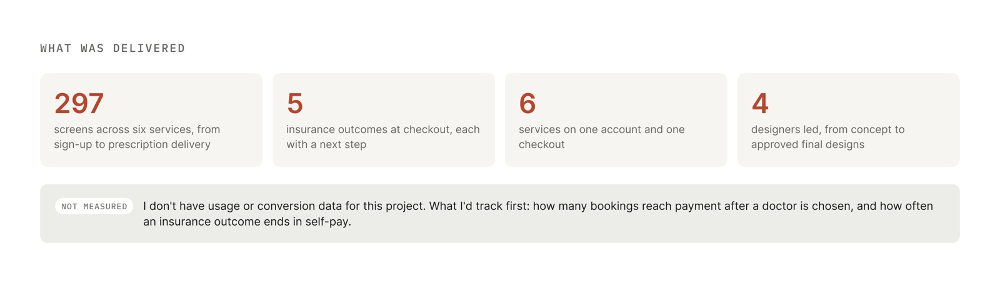

One healthcare app for six services, where the patient sets up only once.
Aster runs six healthcare services in the UAE: consultations by video or in person, an online pharmacy, health packages, chronic care, homecare and records. myAster puts all six in one native app, each with its own rules — insurance approvals, controlled medicines, eligibility. I led four designers from concept to approved final designs, on one account and one checkout shared by every service.
Role on this project
Lead UI/UX Designer · Led a team of four
Project type
Native mobile app, new product
Client
Aster — UAE
Timeline
8–12 months

Illustrative data. Names are anonymised.
01The problem
Six services, one patient.
None of which is the patient's problem. They shouldn't have to learn six apps, or enter their family, ID and insurance six times over. The hard part was never any one service. It was everything the six had to share.
6
Services, each with its own operational rules
1
Account, checkout and identity model to serve all of them
5
Distinct insurance outcomes a patient can hit at checkout

The eight steps of one consultation. The video call is one of them; everything around it is where the design work sat.
01
Insurance isn't a yes or no
Covered outright, a co-pay, outside the default policy, or a GP referral needed first. A binary approved/declined screen sends a real patient to a dead end.
02
Controlled medicines can't be delivered
Delivery is off the table. The app has to say why, and where to collect with an Emirates ID, within 7 days.
03
Identity rules differ by person
Emirates ID for residents, passport for tourists, documents that expire. And people book for their children and parents, not only themselves.
04
Six setups, one patient
Without shared foundations, profiles, identity and insurance get configured six separate times.
02Research
Where the requirements came from.
Aster's business team supplied the operational rules, and every design went through a client walkthrough before it moved.
Interviews
Patients and doctors
Both sides of the consultation: the person booking and the person delivering care.
Product audit
The existing product
How people were already using myAster, before we added five more services on top.
Competitive
Regional healthcare apps
What patients in the UAE had already been taught to expect.
Cadence
Twice-monthly working sessions
Plus a client walkthrough of every flow, which is where most of the operational rules surfaced.
03Strategy
Build the shared foundations once. Let every service inherit them.
Not six service designs. One decision, taken once, about what profiles, identity, insurance and checkout do — so every service added later starts from something that already works.
One account for the whole family, with every profile showing its status up front: verified, pending, incomplete, or an Emirates ID that has expired.
Every insurance outcome carries a next step, self-pay included, so no checkout ends in a dead end.
One checkout and one set of identity rules carry all six services.
04Design
The decisions, and what each one cost.
Foundation 01 · Profiles
One account for the whole family
Every profile wears its status openly — verified, verification pending, incomplete, or an expired Emirates ID — and tourists use a passport instead. You see it before booking starts, not at checkout.

Profile status, shown before a booking starts.
Foundation 02 · Insurance
Give every insurance outcome a next step
Each of the five outcomes says plainly what happened and offers a way forward, self-pay included. Nobody reaches a screen with nothing to do next.

The five insurance outcomes at checkout.
Service 01 · Consultations
The video call was the easy part
Everything around the call is the work: finding a doctor, the right patient profile, identity and insurance, a prescription afterwards. Two ways in — the next available GP with the wait time, or a filtered list by specialty, language and clinic. A waiting room with a countdown then collects vital signs, health questions, documents and the delivery address, so the doctor's time goes to care.

The two ways into a consultation.
Service 02 · Pharmacy
Medicines that follow the patient
Patients pre-order medicines at booking, straight from the home screen, and confirm the delivery address while they wait — so the prescription goes out soon after the call ends.

Pre-ordered at booking, dispatched after the call.
Services 03–05
Each service keeps its own rules without breaking the shared model
Health packages are bought first and booked later, with the clinic calling within 24 hours. Chronic care replaces separate bookings with one care plan holding appointments, medicines and monitoring labs. Homecare shows duration, price and next slot, and one booking can hold several visits on different dates.

Health packages: price and inclusions up front, booked after the clinic calls.
05Impact
297 screens, approved for build.
In a multi-service app, the shared parts are the product. Profiles, insurance and checkout decided whether any individual service worked at all — and whatever Aster adds next starts from something that already works.
297
Screens across six services, approved for build
18 + 161
Core and product components in one shared system
5
Insurance outcomes, each with a next step

What was delivered: 297 screens across six services, five insurance outcomes each with a next step, and one shared component system.
06Reflection
What it taught me.
The shared parts are the product
Getting profiles, insurance and checkout right once made every service after them easier to build. The sixth cost less than the second.
Leading four designers means holding one model
Six service teams each wanted their own version of the same screen. Most of the job was telling a real difference from a preference, and saying so.
What I’d do differentlyAgree the success metrics before design starts. We shipped 297 approved screens with no measurement plan behind them.